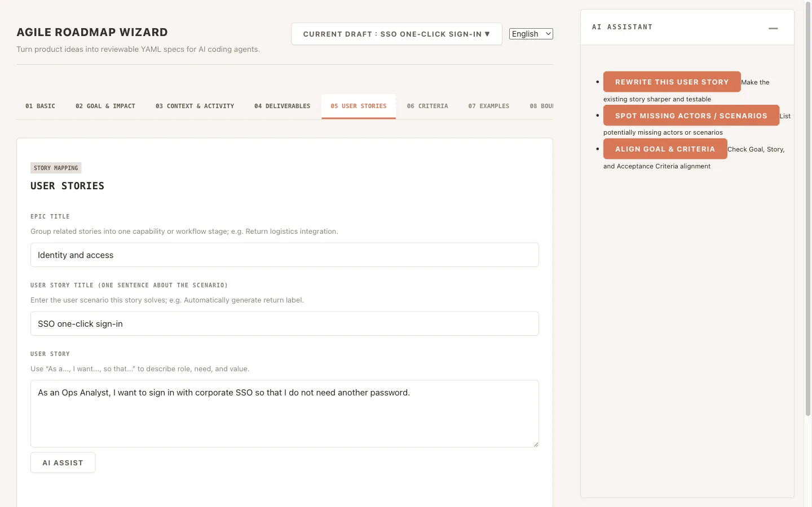
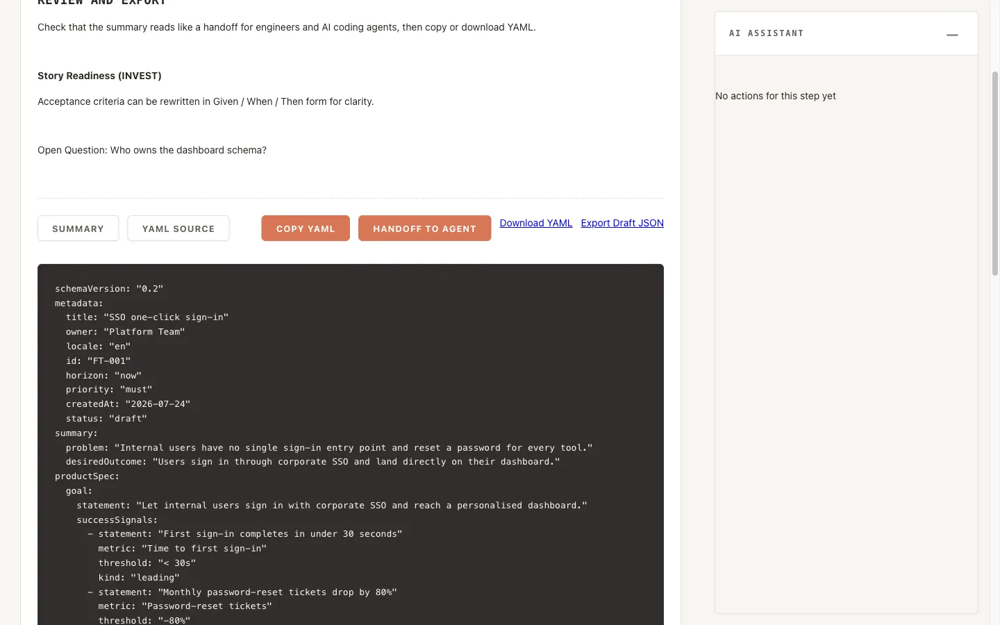

Agile Roadmap Wizard
Turn a rough idea into a spec an AI agent can actually build.
Vector interviews you about a feature the way a good tech lead would — goal, impact, stories, acceptance criteria, boundaries — and exports a structured YAML spec that Claude Code or Codex can execute without guessing.
The problem
Vague prompts produce vague code.
Hand an AI coding agent a one-line request and it will confidently invent the parts you left out: the edge cases, the non-goals, the constraint you assumed was obvious. The gap is not the model — it is that nobody wrote down what "done" means.
Vector is the interview that fills that gap. It is deliberately structured, so a non-technical decision-maker can complete it alone, and the result is precise enough to hand straight to an agent.

Why Vector
Built for the handoff, not the demo.
Agent-agnostic
Runs local CLI agents through one contract. Switch with VECTOR_AGENT=claude or VECTOR_AGENT=codex — the same spec, the same actions, no rewrite.
AI is advisory, never authoritative
Assist returns suggestions, warnings and open questions. It never edits your draft behind your back, and the wizard works fully without it.
RAID is part of the spec
Risks and open questions travel with the feature, each with its own status, instead of being lost in a comment thread.
Paper-like, high density
Warm neutrals and fine rules rather than a glowing dashboard — the interface is built for long drafting sessions, not screenshots.
Two paths
Start from code, or start from nothing.
Path A — Code to Spec
Point the vector-analyzer skill at an existing repository and it reverse-engineers a Feature Draft you can refine in the wizard.
Use the vector-analyzer skill to analyze this
repo and produce a FeatureDraft JSON.Path B — Idea to Spec
Run the vector-pipeline-b skill to take a raw system idea through four stages — Frame, Decompose, Slice, Handoff — ending in Feature Seeds.
npx vector-wizard import \
docs/methodology/reference-case/04-handoff/
A worked example of all four stages ships with the repo under
docs/methodology/reference-case/, including two finished Feature Seeds you can import today.
The output
A spec, not a summary.
Every draft exports to the same shape: metadata for roadmap placement,
productSpec for what to build, and agentSpec for the boundaries the agent
must respect. Below is genuine wizard output for the example above, abridged for length.
schemaVersion: "0.2"
metadata:
title: "SSO one-click sign-in"
locale: "en"
id: "FT-001"
horizon: "now"
priority: "must"
status: "draft"
productSpec:
goal:
statement: "Let internal users sign in with corporate SSO and reach a personalised dashboard."
successSignals:
- statement: "First sign-in completes in under 30 seconds"
- statement: "Monthly password-reset tickets drop by 80%"
epics:
- title: "Identity and access"
stories:
- id: "US-001"
title: "SSO one-click sign-in"
userStory: "As an Ops Analyst, I want to sign in with corporate SSO so that I do not need another password."
acceptanceCriteria:
- id: "AC-001"
statement: "An unauthenticated visitor is redirected to the corporate IdP."
agentSpec:
nonGoals:
- "External customer sign-in is out of scope"
constraints:
- "Must reuse the existing Snowflake warehouse"
testExpectations:
- "Integration test covers the IdP redirect round-trip"
openQuestions:
- id: "Q-001"
text: "Who owns the dashboard schema?"
status: "open"YAML keys stay English whichever language you draft in, so the same spec is portable across teams and agents. A human-readable Markdown summary is exported alongside it for review.

Getting started
Run it locally in two commands.
# run the wizard without installing anything
npx vector-wizard
# or clone and develop
bun install
bun run dev # uses the claude agent by default
VECTOR_AGENT=codex bun run dev
The wizard opens at http://localhost:3000. Drafts are stored in your browser's
localStorage and can be exported as JSON — there is no backend and nothing leaves your machine
except the calls your chosen local agent makes.
- Full setup and skill-installation instructions: README
- Product vocabulary:
CONTEXT.md - Contributor and agent guide:
AGENTS.md